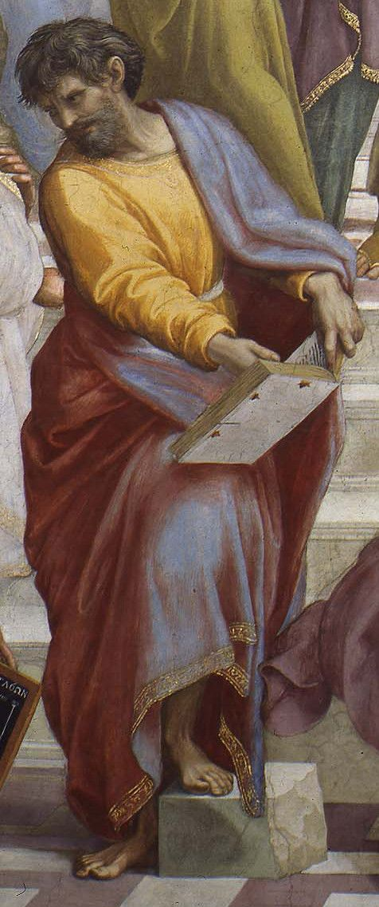
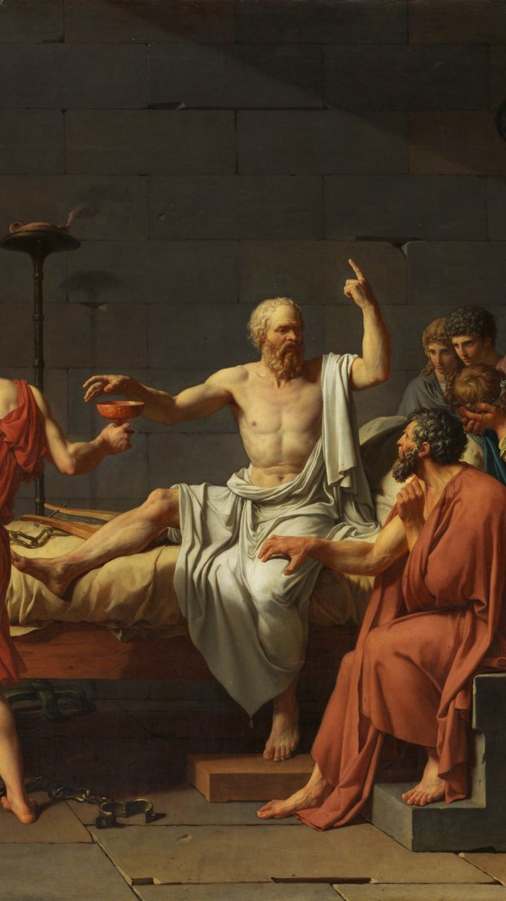
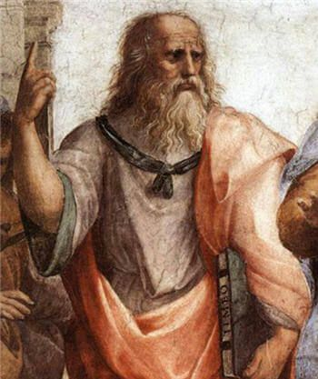
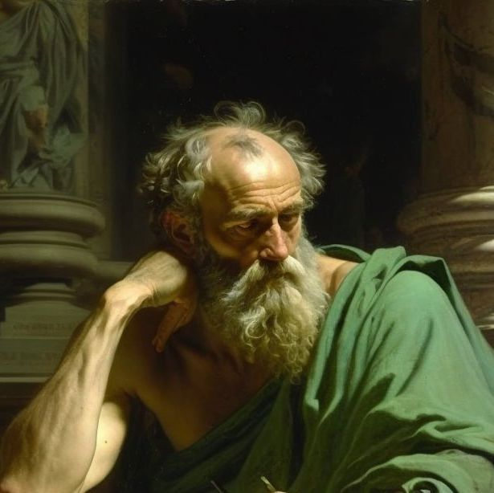
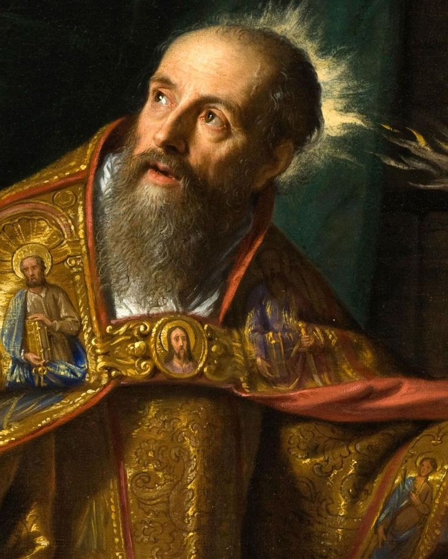
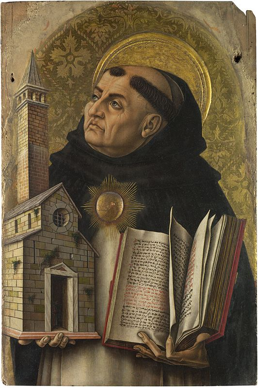
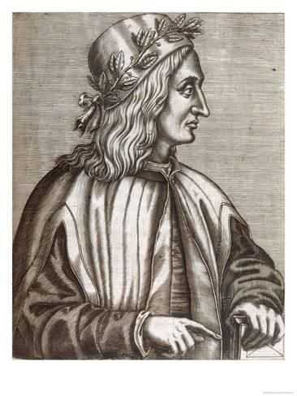
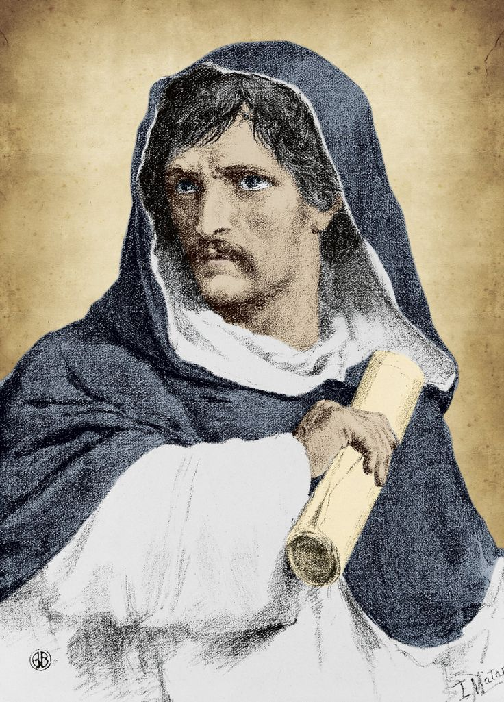
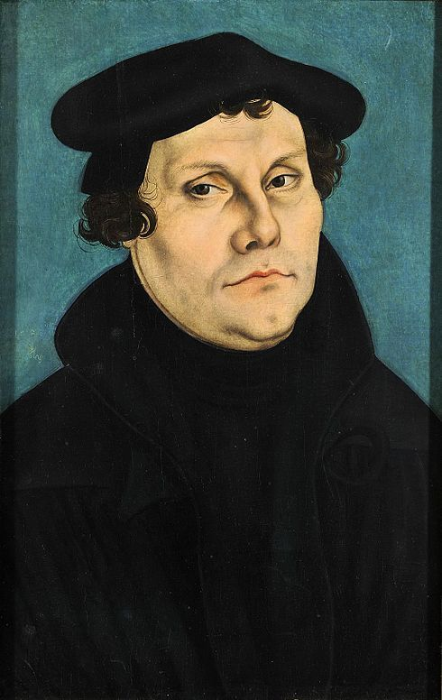

Heraclito
Heráclito fue un filósofo presocrático conocido por su doctrina del "panta rei" (todo fluye). Creía en el cambio constante como la esencia misma de la realidad. Su enfoque en el devenir y el flujo constante de la naturaleza nos recuerda la impermanencia de todas las cosas, lo que puede ayudarnos a aceptar y adaptarnos a los cambios en nuestras vidas.
Parmenides
Parménides argumentaba que el cambio es ilusorio y que solo el Ser es real. Su filosofía, aunque controvertida, nos invita a reflexionar sobre la naturaleza de la realidad y la importancia de la lógica y la razón en nuestras concepciones del mundo.
Socrates
Sócrates es conocido por su método de indagación filosófica, la "mayéutica", mediante la cual buscaba llegar a la verdad a través del diálogo y la autoindagación. Su énfasis en la importancia del cuestionamiento y el autoconocimiento sigue siendo relevante hoy en día, ya que nos insta a examinar nuestras creencias y valores con mayor profundidad.
Platon
Platón, discípulo de Sócrates, es famoso por sus teorías de las Ideas o Formas y su visión de la realidad como una serie de niveles de conocimiento. Su obra, especialmente sus diálogos, nos desafía a pensar críticamente sobre la justicia, la moralidad y la búsqueda del conocimiento más allá de lo tangible.
Aristoteles
Aristóteles es considerado uno de los fundadores de la filosofía occidental. Su enfoque en la lógica, la ética y la metafísica ha influido profundamente en el pensamiento occidental. Sus ideas sobre la ética y la virtud todavía son relevantes hoy en día, ya que nos ayudan a reflexionar sobre cómo vivir una vida buena y ética.
San Agustin
San Agustín fue un filósofo cristiano cuyas obras abordaron temas como la fe, la razón y el problema del mal. Su enfoque en la conexión entre la fe y la razón puede ser útil en el diálogo entre la religión y la ciencia en la actualidad.
San Tomas de Aquino
Santo Tomás fue un teólogo y filósofo medieval conocido por su síntesis del pensamiento aristotélico con la teología cristiana. Su enfoque en la razón y la fe y su intento de reconciliar la filosofía clásica con la teología cristiana aún influyen en el pensamiento religioso y filosófico contemporáneo.
Pico Della
Pico della Mirandola fue un humanista renacentista cuyo trabajo se centró en la dignidad y la libertad humanas. Su "Oración sobre la dignidad del hombre" destaca la capacidad humana para elevarse por encima de las limitaciones y perseguir la excelencia, un mensaje relevante en la actualidad.
Giordano Bruno
Bruno fue un filósofo renacentista que abogaba por la libertad de pensamiento y se opuso a las doctrinas dogmáticas de su tiempo. Su defensa de la libertad de expresión y su disposición a desafiar las ideas establecidas nos recuerda la importancia de la libertad intelectual y el pensamiento crítico en cualquier sociedad.